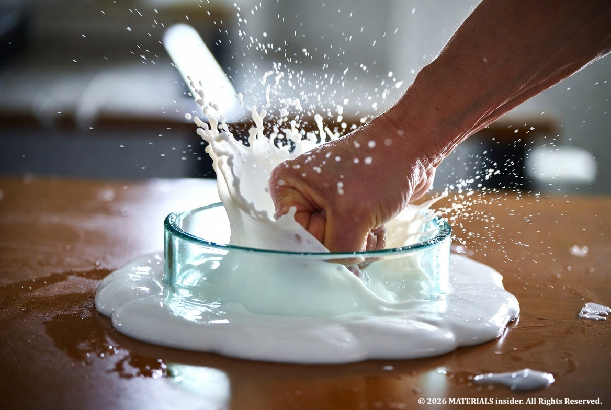
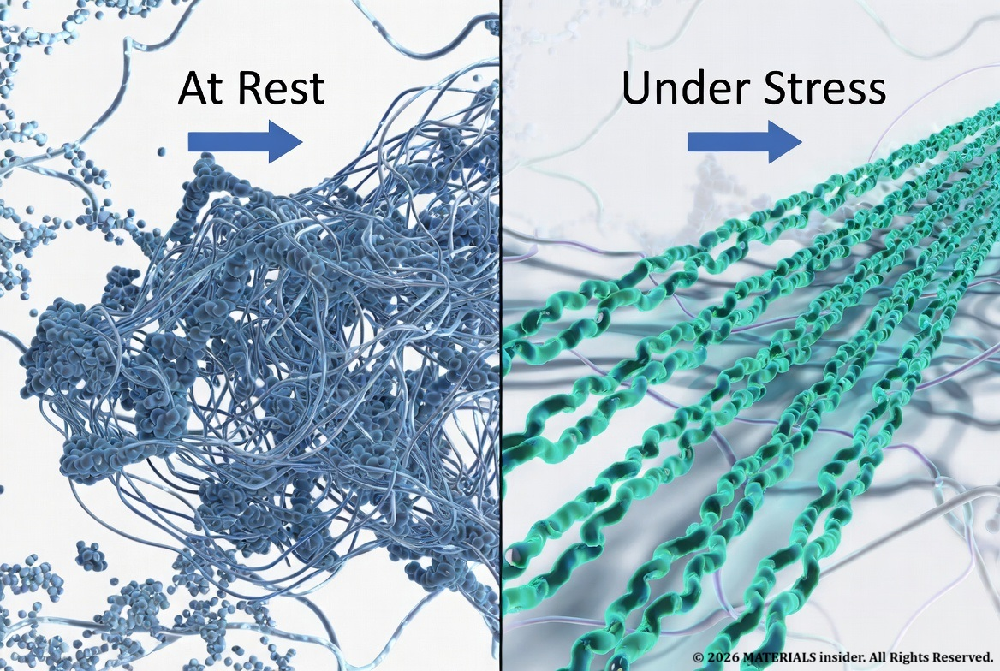
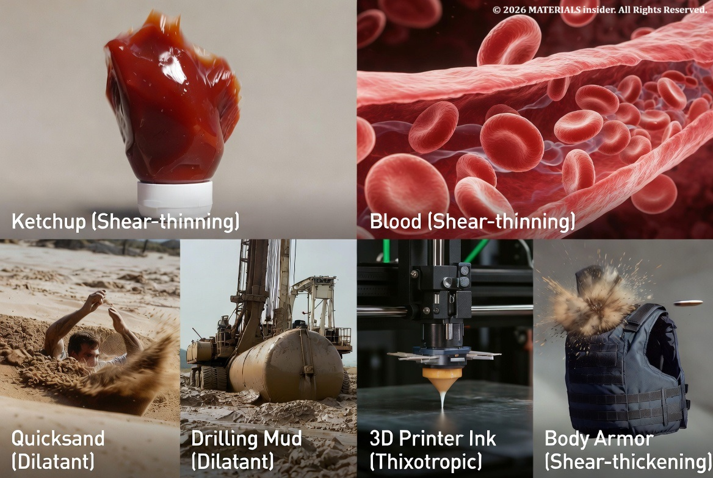

Non-Newtonian Fluid : A substance that does not follow Isaac Newton’s laws
Most of us think of fluids like water or air as predictable: they flow easily, and their "thickness" (viscosity) stays constant no matter how fast you stir them. These are Newtonian fluids, but many real-world some substances break these rules. They are non-Newtonian fluids—their viscosity changes depending on the applied stress, time, or other conditions.

This fascinating behavior arises from the microscopic structure and interations (bondings and forces) between particles or molecules, making non-Newtonian fluids a key topic in materials science, rheology (the study pf flow), and everyday applications
Type of Non-Newtonian Behavior:
Non-Newtonian fluids are classified by how they resposnd to stress:
- Shear-Thinning (Pseudoplastic): Viscosity decreases as shear rate increases. Stir or pour faster, and if flows more easily. At rest, tangled polymer chains or particles resist flow; under stress, they align or disentangle, reducing resistance. Example: ketchup, paints, blood and yoghurt.
- Shear-Thickening (Dilatant): The opposite~viscosity increases with the shear rate. Slow movement keeps it liquid-like sudden force makes it solid-like. Example: Oobleck (cornstarch + water)
- Thiixotropic: Viscosity decreases over time under constant stress (time-dependent shear-thinning). Stirring honey or paints make it runnier the longer you go.
- Rheopectic: Viscosity increases over time under stress (rare). Whipped cream thickens as you beat it.
- Bingham Plastics: Act like solids until a yeild stress is exceeded, then flow like liquids. Examples: Toothpaste, mayonnaise
Other behaviors include viscoelasticity (combining viscous flow and elastic rebound, like Silly Putty. Let's go deep one by one in the future but today lets deep dive in to the OOBLECK.

Materials Bonding and Forces: The Microscopic Explanation ->
The magic lies in intermolecular and interparticle forces, not simple covalent bonds within molecules, but weaker interactions that govern how components organize under stress.
In oobleck (a suspension, not a true solution):
- Cornstarch particles (long, rough, irregularly shaped starch polymers, ~1-10 microns) are suspended in water.
- At low shear (slow stirring), particles slide past each other easily. Water acts as a lubricant, and weak hydrogen bonds or van der Waals forces allow flow. The mixture behaves like a liquid.
- At high shear (punching or rapid stirring), particles jam together. Hydrodynamic forces push them into close contact, forming temporary "force networks" or clusters. Water gets trapped, and friction/repulsive forces between particles create a rigid structure. It feels solid. Release the stress, and particles relax, flowing again.
This is driven by:
- Hydrodynamic lubrication forces and particle collisions.
- Attractive forces (e.g., van der Waals) dominating at rest or low shear.
- Contact and frictional forces surging under rapid deformation.
In polymer-based shear-thinning fluids (like paints or blood):
- Long-chain molecules or polymers are entangled at rest (high viscosity due to entanglement and hydrogen bonding).
- Shear aligns chains in the flow direction, reducing entanglements and effective viscosity.
In colloidal suspensions or emulsions, particle size, shape, concentration, and surface chemistry dictate behavior. High concentrations favor dilatancy as particles crowd.
Bonding perspective: These aren't permanent chemical bonds breaking/forming but dynamic rearrangements of weaker forces—hydrogen bonds, ionic interactions, van der Waals attractions, steric repulsion, and electrostatics. External stress disrupts equilibrium structures, leading to emergent properties.
Everyday Examples and Applications ->

- Ketchup: Shear-thinning—hard to pour until shaken.
- Blood: Shear-thins in arteries for efficient flow.
- Quicksand: Can behave dilatantly.
- Industrial uses: Drilling muds (thixotropic for stability), 3D printing inks, body armor (shear-thickening fluids harden on impact), and food processing.
Non-Newtonian fluids power smart materials, from self-healing coatings to adaptive damping in vehicles.
Why It Matters in Materials Science ->
Understanding these behaviors allows engineers to design better products—tailoring particle interactions, polymer lengths, or additives to control flow precisely. Advances in rheology and nanotechnology continue to unlock new applications, like tunable fluids for robotics or medicine.
How to make your own Non-Newtonian Fluid at home ->
Non-Newtonian fluids remind us that matter isn't always straightforward. Mix cornstarch and water at home (roughly 2:1 ratio by volume) and experiment—you'll see (and feel) the science firsthand. Their study bridges chemistry, physics, and engineering, revealing how subtle molecular forces create surprising macroscopic effects.
Share this article: